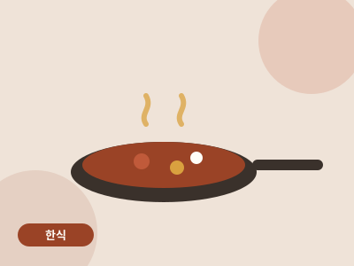
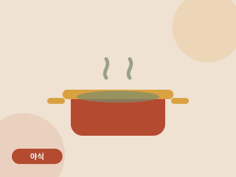

Recipe Archive
레시피 아카이브
모든 레시피는 1구 인덕션 · 조리대 60cm · 미니 오븐, 세 가지 제약 안에서 완성되었습니다. 장비 걱정 없이 골라 만드세요.
총 8개의 레시피

한식
10분 버터간장계란밥
자취 요리의 알파이자 오메가. 버터를 넣는 타이밍 하나로 급이 달라집니다.

한식
원팬 김치제육덮밥
재우는 시간 없이 20분. 팬 하나로 볶음부터 소스까지 끝냅니다.

양식
원팬 크림파스타
면 삶는 냄비 따로 없이, 팬 하나로 끝내는 크림파스타. 설거지는 팬 하나.

양식 · 디저트
미니오븐 바스크 치즈케이크
3만 원짜리 미니 오븐으로 카페 디저트를. 반죽은 볼 하나, 거품기 하나.

야식
전자레인지 폭탄계란찜
불 없이 8분. 야식의 죄책감을 최소화한 국물 계란찜.

야식
새벽의 국물떡볶이
야식 욕구가 이길 때를 위한 15분 방어 레시피. 밀키트보다 싸고 배달보다 빠릅니다.

밀프렙
데리야끼 치킨 밀프렙 4일치
일요일 40분 투자로 평일 저녁 4일이 해결되는 원룸쿡식 밀프렙.

밀프렙
오버나이트 오츠 3가지 맛
자기 전 5분, 아침은 냉장고에서 꺼내기만. 불도 전자레인지도 필요 없습니다.